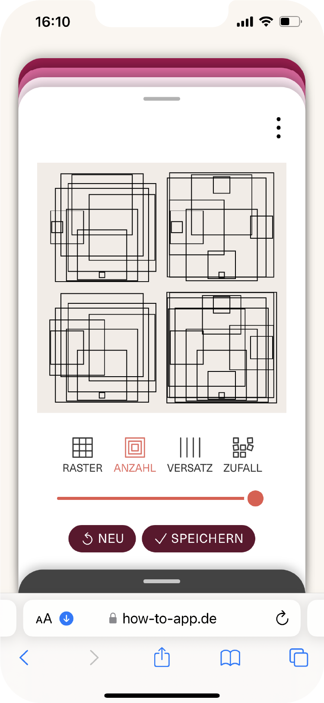

ist kunst eine möglichkeit ?
»Der Computer hilft dem Maler Formkombinationen zu finden, die man nie zuvor gesehen hat, weder in der Natur, noch im Museum: er hilft, unvorstellbare Bilder herzustellen. Der Computer hilft, aber er ›macht‹, er ›gestaltet‹, er ›erfindet‹ nichts.«
Vera Molnar
Vera Molnar

das spiel
Im Spiel SPUR geht es darum, welche Dimension eine Linie annehmen kann. Was beschreibt sie? Was passiert mit ihr, wenn sie sich verdichtet? Eine Linie kann so Vieles sein, Aufzeichnung, Umriss, Verbindung, Spur.
das werk
1974 entwickelt Vera Molnar zusammen mit ihrem Mann François das Computerprogramm Molnart. Sie möchte ihre Versuchsreihen systematisch anlegen und nimmt sich vor, ihre Lieblingsform, das Quadrat, zu erforschen. So legt sie in diesem Programm beispielsweise ein Quadratraster an. In jedes der Quadrate sind wiederum kleinere Quadrate eingeschrieben, deren Seiten regelmäßig abnehmen und die symmetrisch um den Mittelpunkt, also konzentrisch, angeordnet sind. Die Größe und die Anzahl der Quadrate pro Zeile lassen sich beliebig variieren. Die so entstehenden Bilder bezeichnet Vera Molnar zunächst als redundant, d.h. beliebig wiederholbar, weil sie keinen ästhetischen Zustand erzeugen. Sie sind nichts weiter als aus Algorithmen, also festgelegten Regeln, erzeugte Muster. Was aber ist ein ästhetischer Zustand? Vera Molnar sagt, um einen ästhetischen Zustand zu erkennen, also um zu erkennen, ob etwas spannend genug ist, um Kunst zu sein, braucht es Intuition. Sie beginnt, in die von ihr selbst festgelegten Regeln einzugreifen, indem sie einzelne Variablen systematisch manipuliert. Die Eingriffe sind oft nur ganz klein und trotzdem entsteht auf diese Weise eine Vielzahl von Ergebnissen. Mal werden einzelne Quadrate ausgelassen, mal wird der Mittelpunkt oder die Eckpunkte verschoben. Später kommen Farben hinzu, denen bestimmte Werte oder Größen zugeordnet sind. Sie versucht, verwirft, versucht neu, wählt aus. Die Möglichkeiten sind zahllos und doch wählt sie immer nur einige, wenige Bildergebnisse aus, um sie auszudrucken. In den 1970er Jahren verwendet sie dafür einen sogenannten Benson Plotter, in den ein Stift eingespannt wird, der wie mit einer automatischen Hand Linie für Linie so zeichnet, wie Vera Molnar sie im Programm festgelegt hat. Obwohl es maschinell erzeugte Linien sind, haben sie eine ganz eigene malerische Qualität, etwa an den Stellen, wo der Stift etwas länger aufsetzt und die Farbe ausläuft oder dort, wo sich Linien überlagern.
Eine Serie, die so entsteht, sind die sogenannten (Dés)Ordres, (Un)Ordnungen. Sie gehen immer von einer Ordnung aus, die gestört wird, um eine neue, spannendere Ordnung zu erzeugen. Manche Bilder dieser Serie heißen sogar 1% (Un)Ordnung, in ihnen beträgt die Abweichung von der Ordnung genau 1%. Vera Molnar sagt, das sei für sie ein idealer Wert, weil die Ordnung noch sichtbar bleibt und trotzdem gebrochen wird.
»Eine große Sache in meinem Leben ist, dass ich versucht habe, das Irrationale zu rationalisieren, die Kunst zu rationalisieren, mit François und einem ganzen Umfeld. Ich kann es nicht besser sagen. Und dass ich nach und nach gemerkt habe, dass es keine Zukunft hat oder dass es für mich keine Zukunft hat, weil ich dafür keinen Kopf habe. Ich brauche einen Pinsel, einen Bleistift. Selbst jetzt, beim Frühstück, bin ich glücklich, einfach einen Bleistift zu nehmen und es noch einmal zu versuchen. Also schwanke ich zwischen dem Irrationalen und dem 1%-Durcheinander, es ist ein gutes Bild von mir. Man schafft Ordnung und dann unterwandert man sie. Das bin ich, das ist mein Selbstportrait.«
VERWENDETE UND ZITIERTE LITERATUR
Vera Molnar: Un moment éphémère de certitude. o.O. 1980 (Quelle)
Vera Molnár. Entretien avec Vincent Baby. Paris 2022
Vera Molnar: Description du programme «Molnár» (1974-1976). In: Vera Molnár. Entretien avec Vincent Baby. Paris 2022
Eine Serie, die so entsteht, sind die sogenannten (Dés)Ordres, (Un)Ordnungen. Sie gehen immer von einer Ordnung aus, die gestört wird, um eine neue, spannendere Ordnung zu erzeugen. Manche Bilder dieser Serie heißen sogar 1% (Un)Ordnung, in ihnen beträgt die Abweichung von der Ordnung genau 1%. Vera Molnar sagt, das sei für sie ein idealer Wert, weil die Ordnung noch sichtbar bleibt und trotzdem gebrochen wird.
»Eine große Sache in meinem Leben ist, dass ich versucht habe, das Irrationale zu rationalisieren, die Kunst zu rationalisieren, mit François und einem ganzen Umfeld. Ich kann es nicht besser sagen. Und dass ich nach und nach gemerkt habe, dass es keine Zukunft hat oder dass es für mich keine Zukunft hat, weil ich dafür keinen Kopf habe. Ich brauche einen Pinsel, einen Bleistift. Selbst jetzt, beim Frühstück, bin ich glücklich, einfach einen Bleistift zu nehmen und es noch einmal zu versuchen. Also schwanke ich zwischen dem Irrationalen und dem 1%-Durcheinander, es ist ein gutes Bild von mir. Man schafft Ordnung und dann unterwandert man sie. Das bin ich, das ist mein Selbstportrait.«
VERWENDETE UND ZITIERTE LITERATUR
Vera Molnar: Un moment éphémère de certitude. o.O. 1980 (Quelle)
Vera Molnár. Entretien avec Vincent Baby. Paris 2022
Vera Molnar: Description du programme «Molnár» (1974-1976). In: Vera Molnár. Entretien avec Vincent Baby. Paris 2022